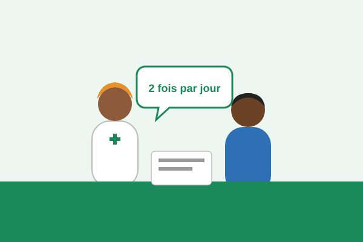
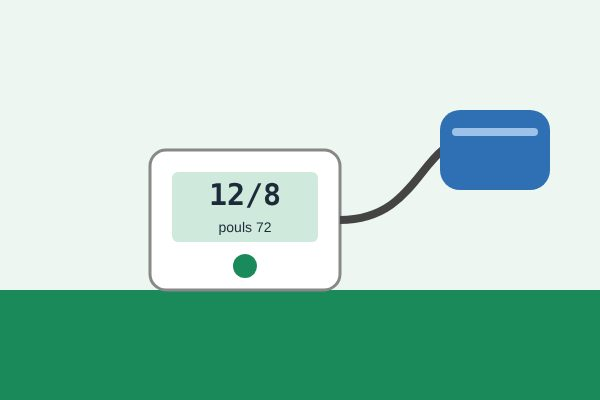

Pharmacie Ndèye Coumba
Au-dela de la delivrance des médicaments, nous vous accompagnons au quotidien.

Posologie, effets indésirables, interactions entre médicaments: la pharmacienne et son equipe repondent à vos questions, sans rendez-vous

Soins du corps et du visage, hygiène, produits pour bébé, complements alimentaires: consultez notre catalogue pour savoir ce qui est disponible.

Gratuit et sans rendez-vous, du lundi au samedi. L e résultat vous est remis sur une fiche à montrer à votre medecin.

Si un produit n'est pas en stock, nous le commandons auprès de nos fournisseurs. Il est en géneral disponible sous 48 heures
La vente de médicaments se fait uniquement au comptoir, sur conseil de la pharmacienne et, si nécessaire, sur présentation d'une ordonnance
Pharmacie Ndèye Coumba Route principale, à cote du rond-point, Guediawaye
Téléphone: 77 000 00 00 E-mail: pharmacie.ndeyecoumba@example.sn
Ouvert du lundi au samedi, de 8h à 22h
Projet pédagogie structure fictive